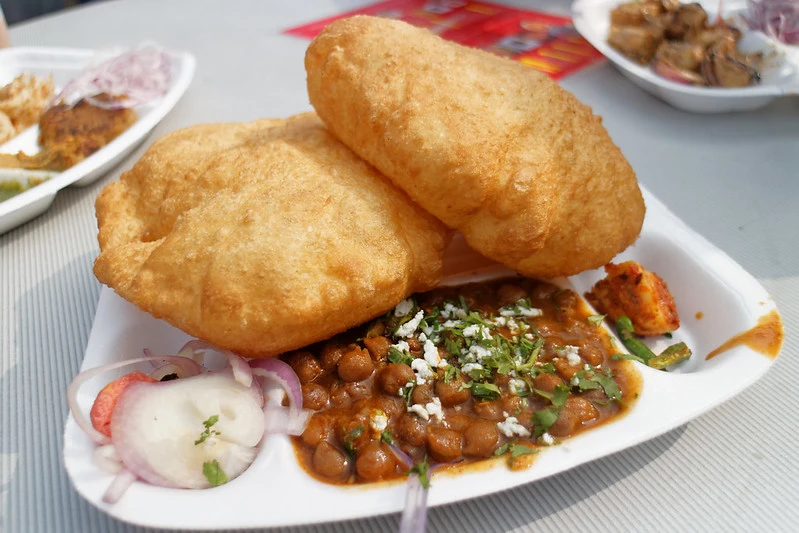
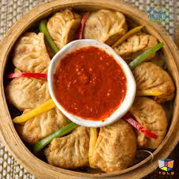
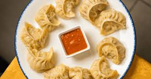
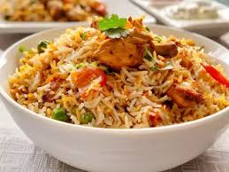

must have dish in NCR

chole bhature

momos
The food scene in the National Capital Region (NCR) is a vibrant and diverse tapestry, blending rich historical traditions with modern culinary innovation. Delhi, the heart of the NCR, is famous for its hearty and flavorful Mughlai and Punjabi cuisine, with iconic dishes like Butter Chicken, Nihari, and a variety of succulent kebabs. The bustling streets of Old Delhi are a paradise for street food lovers, offering everything from the tangy and spicy chaat and golgappe to the comforting chole bhature and stuffed paranthas from Paranthe Wali Gali. Beyond the capital, cities like Noida and Gurgaon have developed their own distinct food cultures, boasting a mix of upscale restaurants, quirky cafes, and themed eateries alongside traditional street food stalls. Here, you can find a wide range of international cuisines, from Italian and Pan-Asian to European and Mexican, catering to the cosmopolitan crowd. The NCR's culinary landscape is a delightful experience, satisfying every palate with its mix of classic comfort food and contemporary dining.

